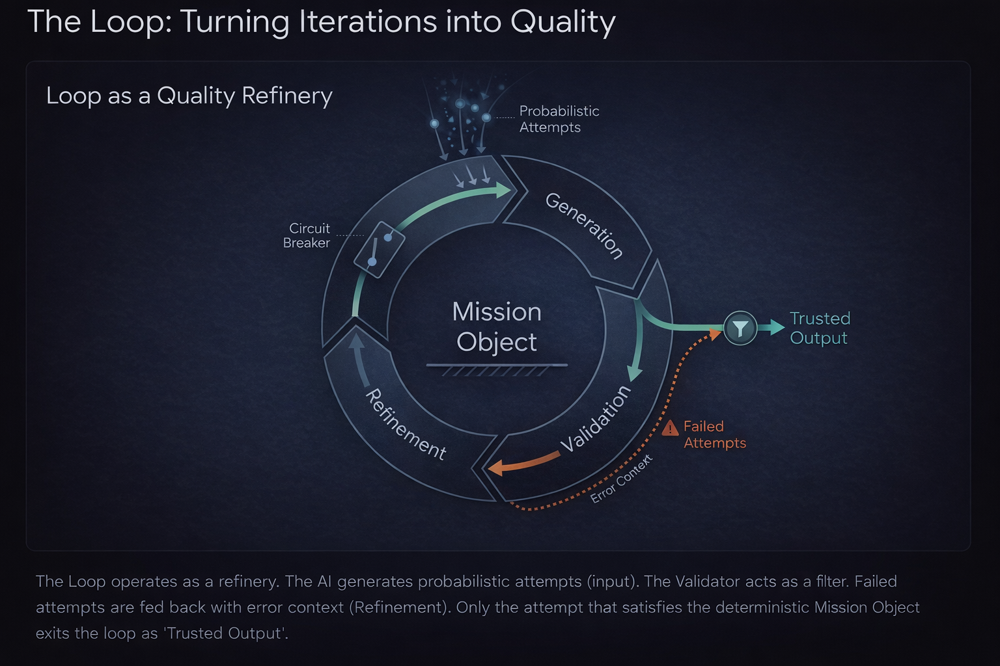

1. The Shape of All Work
Every productive process follows the same loop at every scale: P(Zn) = Z(n+1). The state changes; the process itself can also evolve.
Standard mode: acceleration without structure. Faster loops can also accelerate drift.
The structure is identical at every scale.
Whether you type one character or steer a company, you still transform a current state into a next state through a process. What changes is the time constant and impact radius.
The process itself is part of the loop.
Real systems are recursive: execution generates evidence, and evidence upgrades the process that executes.
Acceleration without structure is chaos.
AI raises loop speed. SDaC adds deterministic validation, bounded effectors, and explicit intent so higher velocity converges instead of drifting.
Mission Object & The Loop

This panel shows the Mission Object loop: probabilistic generation enters, validation filters, refinement feeds failures back with error context, and only trusted output exits.
Deterministic Sandwich

One bounded stochastic step. Output is untrusted until it passes Validation.
The model explores candidates inside a bounded mission packet; no side effects happen at this layer.
- Draft outputs are proposals, not accepted state.
- Cost scales by candidate count, while acceptance is controlled by the gate.
Substrate - Safe autonomy starts when intent and reality are explicit, and every change is traceable.
Map
A structured, machine-readable representation of reality: docs, contracts, inventories, derived views.
Terrain
Reality-as-code: source, configs, schemas, and the behavior your systems actually execute.
Ledger
Append-only history of diffs and receipts: validator output, decision traces, and provenance.
Rule of Seven
2. The Inference Cost Paradox (Looped Systems)
Per-call inference cost may fall. But in production, inference becomes structural: it is embedded inside autonomous loops.
Inference is no longer a utility. It is infrastructure.
Infrastructure is hedged.
- Pricing volatility → operational risk
- Provider lock-in → systemic dependency
- Latency → architectural friction
3. The Limit Case: Entropy at Infinite Velocity
When generation velocity rises without hard constraints, small errors compound into systemic risk. Stewarded loops keep entropy bounded by forcing every attempt through deterministic Physics.
Hover for values. The dashed marker indicates the “limit case” region.
4. Recursion Compounds (The Project Tree)
A loop is not just a retry. It is recursion through a structured state. Each cycle revisits every folder and file, growing the system while tightening interfaces and constraints.
5. The Value Migration
As execution becomes instant, value migrates up the stack.
We are no longer bricklayers; we are the architects designing the blueprints. The "Work" is now defining the shape of the outcome, not producing it.
6. Anatomy of a Steward Loop
In the limit case, we steward persistent loops. The loop traverses the terrain we define.
7. Shaping the Optimization Terrain
This is the new game. You do not push the boulder up the hill. You reshape the hill so the boulder falls into the hole you want.
Intent = Gravity. Changing your intent warps the geometry of the solution space.
The "Loop" simply calculates the shortest path to the mathematical optima you have defined. Who defines the sharpest peaks wins.
8. The Hierarchy of Stewardship
When the foundation is infinite, the structure above it must be precise.